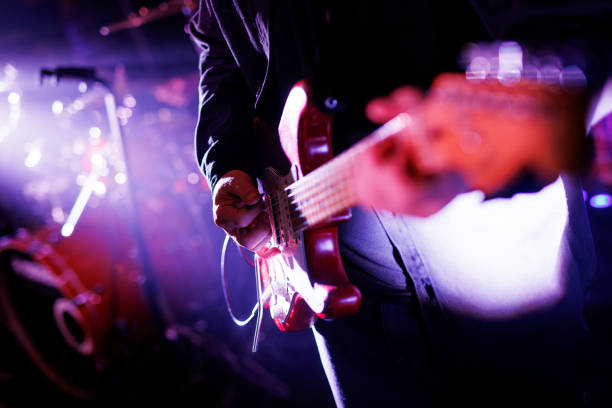
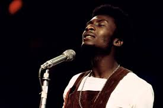
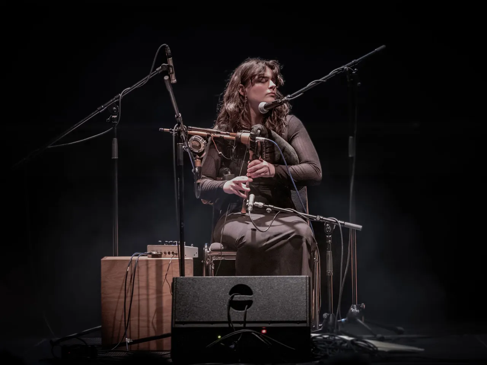
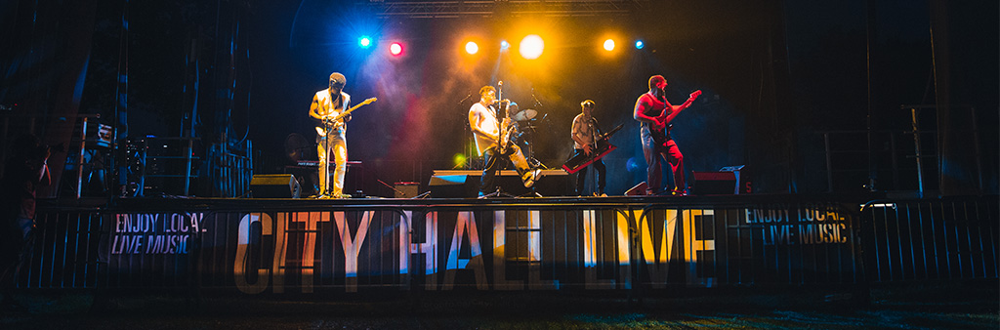

Guitariste • Compositeur • Chanteur
Passionné par la musique depuis toujours, je compose des morceaux mélangeant Rock, Blues et musique moderne.
J’ai commencé la guitare à l’âge de 12 ans et j’ai participé à plusieurs projets musicaux locaux.
Mon objectif est de créer des sons authentiques qui transmettent des émotions fortes sur scène comme en studio.



Festival Music Live
Rock Arena
Acoustic Night
